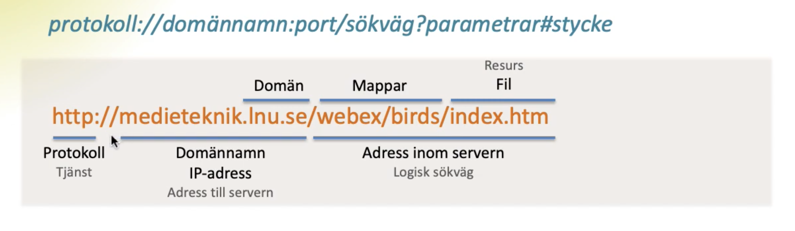

HTTP - HyperText Transfer Protocol. Ett protokoll som oftast benyttjas när vi använder WWW. Port 80. HTTP står för kontakten mellan en webbläsare och en server.
TCP - Transmission Control Protocol - Informationspaket. Involverat vid packet switching. Delar upp meddelanden i mindre paket och numrerar dem innan det skickas ut till mottagaren (en IP-adress). Tack vare numrering kan mottagaren sätta ihop meddelandet igen via TCP och få upp exempelvis en webbplats.
IP - Internet Protocol - adressering. Alla enheter med internetuppkoppling har en unik IP-adress, ett slags identifikationsnummer. Det kan exempelvis vara datorer, router, mobiler, läsplattor, bilar. IP är nödvändigt för att kunna skicka information mellan servrar/ gör att information levereras till rätt mottagare.
(Källa: Föreläsning F1b)
http:// - Protokollet/vilken tjänst som ska användas, HTTP (och HTTPS) är webb
medieteknik.lnu.se - Adressen till servern/IP-adressen. Sista delen (lnu.se) är domänen, medan första delen (medieteknik) är servern. /1me321/uppg/u1 är adressen inom servern, alltså sökvägen - exemplevis i vilka mappar som informationen som efterfrågas ligger i och slutligen vilken fil.
.se - En nationell toppdomän. Detta är Sveriges toppdomän.
Källa: Rune Körnefors 2020, IME321 F1b
https://www.youtube.com/watch?v=9po3qStOmv4